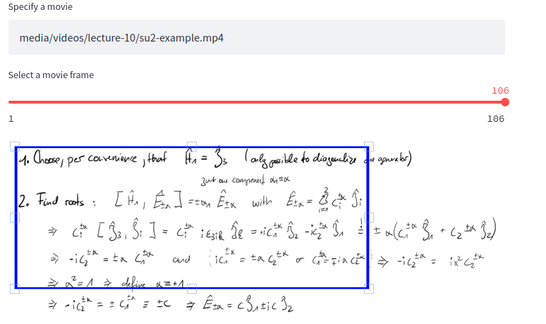

Adding video recordings to slides
This section explains how the "derivation videos" were created and added to the slides.
Used tools
- Writing hardware. I.e., a graphics tablet or similar (I used an IPad + Apple Pen with Notability)
- A screen recorder (i.e., QuickTime on macOS, screencast on Ubuntu or Zoom)
- A way to connect the writer with the recorder (I used UxPlay to duplicate the IPad screen on Ubuntu)
- (Optional)
ffmpegor other tools to edit the video. - (Optional)
scripts/vmanip.py(Python) to generateffmpegcommands for cropping the created video.
Steps
Setup the hardware and recoding software and record the video :)
Cropping the video
The script scripts/vmanip.py allows generating ffmpeg commands which can be used to optimize and crop the video.
To continue, you first need to install ffmpeg and pip install -r requirements.txt.
The command
streamlit run scripts/vmanip.py
will create a GUI which can be accessed in your browser (see the printed URL).
When following the URL, you can specify a movie, drag-and-drop the boundaries to crop the file, specify a factor to speed up the recording, and eventually copy the corresponding ffmpeg command.

For example, for a crop to the box width:height:x:y and a speedup of x1.05
ffmpeg -i media/videos/lecture-10/su2-example.mp4 -filter_complex "[0]setpts=0.95*PTS[b];[b] crop = 3385:2109:37:28[c];[0]atempo=1.05[a]" -map "[c]" -map "[a]" media/videos/lecture-10/su2-example.cropped.mp4
This command needs to be run outside the GUI to create the modified file.